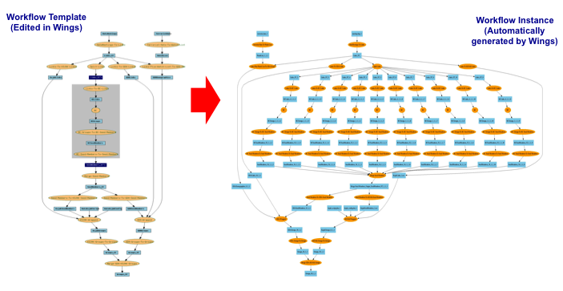
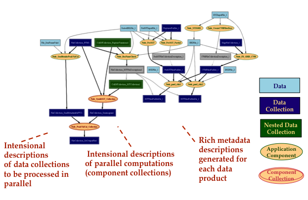
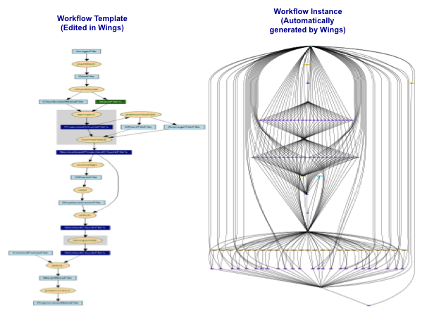
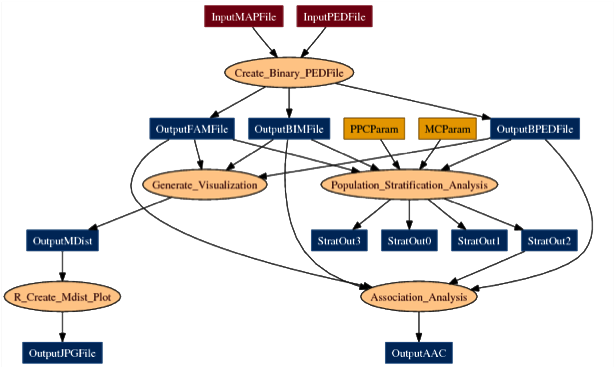
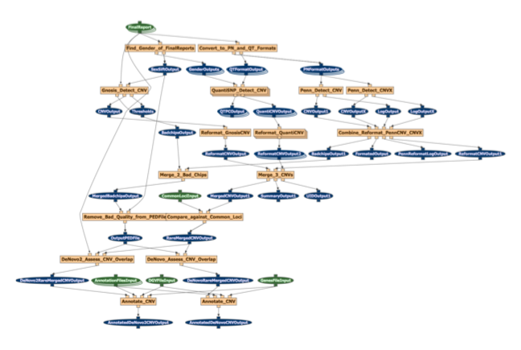

A workflow for social network analysis (in collaboration with the Center for Unexpected Events)

A workflow for seismic hazard analysis (in collaboration with the Southern California Earthquake Center)

A workflow for biomedical image processing (in collaboration with the Center for Comprehensive Informatics at Emory University)

A workflow for population genomics (in collaboration with the Center for Collaborative Genetic Studies on Mental Disorders)

A workflow for genomic analysis (in collaboration with the Institute for Computational Biomedicine at Cornell University)
